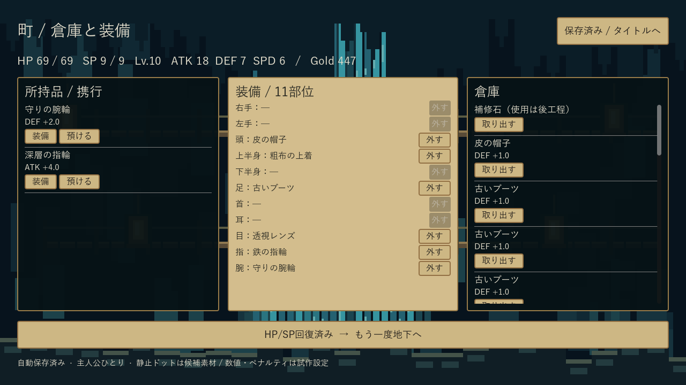

Dive In Under — 確認入口
0.3.0 solo10 / 2431438 / Windows x64 / Godot 4.7.2
ブラウザーがcmdリンクを制限する場合は、このフォルダのPlay.cmdをダブルクリックしてください。旧版の実行中ファイルは変更せず、次回起動先だけを新版へ切り替えています。
通常新規セーブから10F突破を検証済み。工程1全体は画作り要件が未達です。
1000seedで全件突破、中央値13探索。seed10000は13探索・通常死亡1回・帰還11回。初回死亡は別集計。新規0.3のHP成長は仮+5、旧保存は+4を保持します。
今回の実画面
PX参考と実EXEの比較
左が参考、右が現行EXE。参考は見た目の比較用で、背景としてゲームに貼っていません。
探索
 参考PX
参考PX 実EXE 0.3
実EXE 0.3戦闘
 参考PX実EXE 0.3
参考PX実EXE 0.3町・倉庫・装備
 参考PX
参考PX
実EXE 0.3| 部分 | 現在 | 残り |
|---|
| 背景 | 青緑洞窟・暖色灯のコード仮描画 | 独立ピクセル画像、階層帯とボスの差 |
| 人物・敵 | 主人公1人と敵の静止コード候補 | 透過静止スプライトと採否レビュー |
| UI | 動くControl、HP/SP、ログ、装備・倉庫、勝敗、保存 | 参考へ近づけるパネル・素材の整備 |
検証と限界
戦闘142＋探索/保存180＋10F検証44項目、故障注入10件。3つの実EXEプロセスで途中再開と突破後保存を確認。非WinSta0の非表示Stationだけで描画し、アプリ内クリック/通常Timerを使用。OS物理入力は未検証です。人間の手動試遊を必須条件にはしていません。
全受入項目・再現手順・比較表 / 1000seed要約JSON / before/after / seed10000全操作 / 配布SHA
仲間・耐久・全スキル・11F内容・モーションは未実装。素材は未採用の候補です。次工程へ進まず親の受入評価へ戻します。